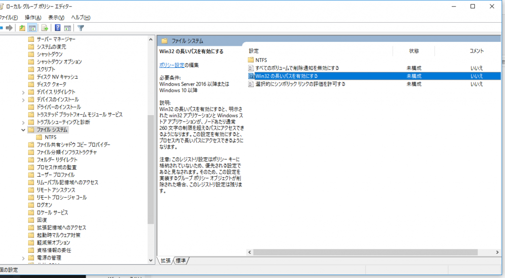

Windows 10 Anniversary Updateが出ましたね。
2018/04/05 更新
Creators Updateから挙動が変わっています。詳細は、開発メモ その104 260文字を超えるパスを有効にする 追試験を参考にしてください。
MAXPATHの制限がなくなります
制限付きですが、忌まわしきファイルパス長の制限がなくなります。
.NETからのアクセスの制限をなくすなら、.NET 4.6.2をインストール、app.configを編集し、かつローカルグループポリシーを修正する必要があります。
app.configに下記のような記述を追加します。
1 |
|
また、ローカルグループポリシーで下記の項目を有効にします。変更後再起動します。
ローカル コンピューター ポリシー -> コンピューターの構成 -> 管理用テンプレート -> システム -> ファイルシステム -> Win32 の長いパスを有効にする

{kind=link}
Win32 の長いパスを有効にする
説明を見ると、
Win32 の長いパスを有効にすると、明示された win32 アプリケーションと Windows ストア アプリケーションが、ノードあたり通常 260 文字の制限を超えるパスにアクセスできるようになります。この設定を有効にすると、プロセス内で長いパスにアクセスできるようになります。
とありますが、.NETも安心して有効にできます。
Windows上の.NETアプリはWin32のラッパーですからね。
ポイントは、明示されたです。
この明示が前段のapp.configへの追記になります。
これを有効にしないと、app.configに追記しても動きません。
設定が効いてない？
ここまでを確認するために、下記のサンプルを置きました。
今回のソースです。
簡単なサンプルで
1 | using System; |
という感じです。名前空間が違うだけでサンプル全て、B:<200文字のフォルダ名><200文字のフォルダ名>なフォルダを作成するだけです。
これを、.NET 4.6.1と4.6.2をターゲットでビルドし、app.configの有無で、Windows 10 + .NET 4.6.2で動かしてみました。
が、不思議な結果になりました。
.NET 4.6.1 + app.configなしの環境 「だけ」 で、
1 | 指定されたパス、ファイル名、またはその両方が長すぎます。完全限定型名は 260 文字未満で指定し、ディレクトリ名は 248 未満で指定してください。 |
という例外を投げました。
理想では、「.NET 4.6.2 + app.configあり」の環境だけで実行できるつもりでした。
少なくとも、app.configがないとダメ、という感じだと思いましたが、この結果は不思議です。
ローカルグループポリシーの有効前後で結果が変化し、最終的にこうなりました。
| .NET バージョン | ローカルグループポリシー有効 App.configあり |
ローカルグループポリシー有効 App.configなし |
ローカルグループポリシー無効 App.configあり |
ローカルグループポリシー無効 App.configなし |
|---|---|---|---|---|
| .NET 4.6.2 | OK | OK | DirectoryNotFoundException | DirectoryNotFoundException |
| .NET 4.6.1 | OK | PathTooLongException | DirectoryNotFoundException | PathTooLongException |
調べてみると、下記のMSDN Blogに記事がありました。
If you target 4.6.2 this isn’t necessary, but if you want to enable the behavior for existing code, here is config file snippet you need to use.
つまり、4.6.2なら特別な設定は不要で、既存のコードで有効にしたいなら、configファイルが必要だよ、ってことらしいです。
グループポリシーで設定有効後、4.6.2で常に動いたのはそういうことのようです。
Conclusion
4.6.2以降はグループポリシー以外は特に気にすることはない模様。
ただ、実運用において、客先でこの設定をバッチか何かで有効にすることはできるのだろうか？無理な気がする。
Source Code
https://github.com/takuya-takeuchi/Demo/tree/master/Misc/01_CheckOver260Characters